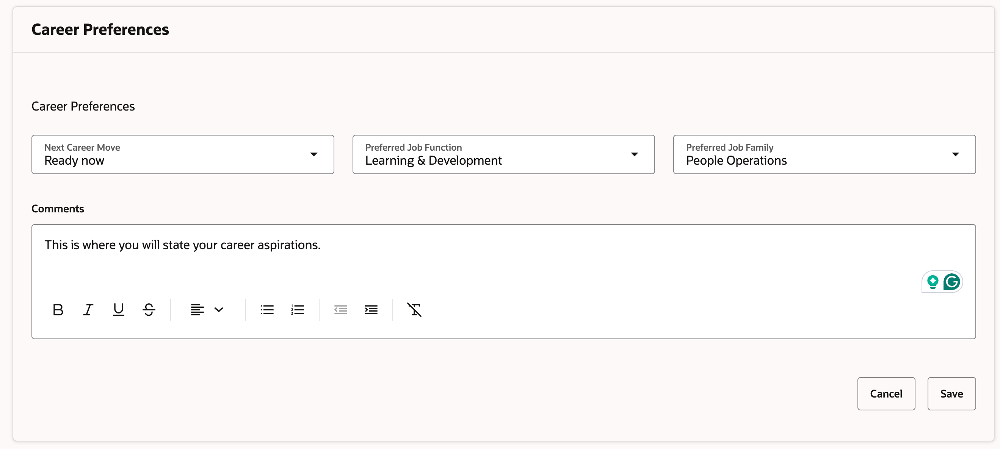
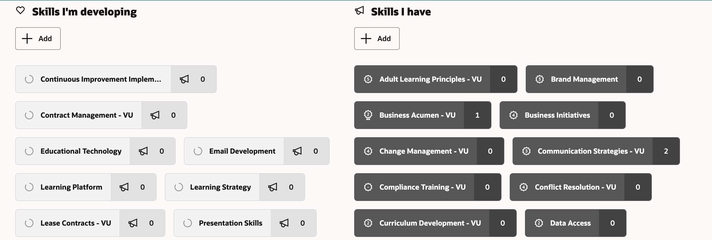
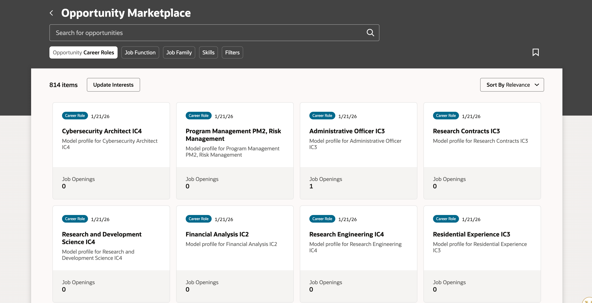

You are here: the facilitator prep page. Learners start on the next page.
Run this course / 00 · Facilitator only
Before the room fills.
Two paths: Full (15 min) or Core (10 min). Every page ahead carries your script in the right rail: Say, Do, Ask with expected answers, Debrief, and a Transition into the next page, with the Core cut named at the bottom of each card. This page is everything that happens before and around the room. Learners never see this edition; the welcome QR on the next page sends them to their own.
One paper packet: this prep page, the run of show, the tough-questions bank, and every section script with its slide pictured beside the notes. Print it or choose Save as PDF.
01 · A week before
Learn the course by taking it
- Read this guide end to end, then run BOTH editions start to finish, doing every exercise, including building your own first move card. You will be asked whether you have used the portal yourself; a real answer plays better than a deflection.
- Confirm the current state of the actual Talent Transfer Portal rollout with People, Culture and Belonging: what is live, what is coming, and who staff contact for help. Write those three facts where you can reach them mid-session.
- Send the pre-work invite (template on this page) with the calendar invite: come with one honest career curiosity, held privately.
- Decide your slot now: the full 15 minutes or the 10-minute squeeze. Mark your cuts from the coreNotes.
- If your audience is heavily managers, re-read Section 04 twice; it is the session's center of gravity for them, and the tough-questions bank leans that way.
02 · The day before
Test everything a learner touches
- Test the projector with the facilitator link; confirm the notes rail is readable from where you'll stand.
- Scan the welcome QR from the back of the room with your own phone; it must land on the learner edition.
- Run every trainer once so no reveal surprises you, especially Judge the Response; you want the two guardrail items ready in your own words.
- Print 5 to 10 quick reference cards and first move cards.
- Re-read the tough-questions bank; say the 'so my manager can see everything I do in there?' answer out loud once.
03 · 30 minutes before
Set the room, set the tone
- Welcome slide up as people arrive; it does the enrolling for you.
- Close every other tab and app; silence the machine.
- Test arrow-key navigation and one interaction (run a round of Fact or Fiction).
- Arrange seating so pairs can form without furniture-moving theater; mixed manager and staff pairs are gold if the room allows.
- Write 'PARKING LOT' and 'OPEN QUESTIONS FOR HR' on the whiteboard where the room can see them.
04 · Materials
Have these in hand
- Projector or large display and the facilitator link open (this edition)
- Facilitator laptop with arrow keys or clicker; all notifications off
- Learner devices (BYOD) joining via the welcome-slide QR
- A few printed quick reference cards (cheatsheet.html) for anyone without a device
- Printed first move cards (worksheet.html) as the no-device and projector-failure fallback
- Whiteboard or flip chart for the parking lot and collected open questions for HR
- The current Talent Transfer Portal launch timeline and support contacts from People, Culture and Belonging, so you can answer 'when' and 'who do I call'
05 · When things go sideways
If it breaks, you have a move
06 · Tough questions, ready answers
Say each answer out loud once before you teach
So my manager can see everything I do in there?
No. Your browsing, your Careers of Interest, and your skills profile are private to you. Your manager gets no notification when you declare interest, and leader-facing Workforce Intelligence shows aggregated, privacy-preserving data, never a list of who is looking. Your manager learns you applied for a role when you tell them or when the hiring process formally requires it, and the norm is that you have that conversation yourself once you are a serious candidate.
Isn't this just poaching with extra steps?
Poaching is secret and zero-sum. This is the opposite on both counts: the marketplace is open to every unit, the releasing manager gets a planned handoff and a backfill through the same system, and the alternative to an internal move is usually an external resignation, which has no handoff and no backfill window. The research backs it: about 75% of managers admit to talent hoarding, and hoarding deters internal applications without stopping external ones (Haegele, American Economic Review, 2024).
If I take a Gig and do great work, why doesn't that guarantee me the permanent role?
Because the Gig is development and the requisition is a competition, and keeping them separate protects you both ways. If Gigs converted automatically, every Gig would become a quiet audition and managers would guard them like headcount. Kept separate, you can stretch without betting your reputation, and when the real requisition opens, your Gig gives you evidence, relationships, and a warm start most candidates won't have.
What if my manager retaliates anyway?
Then the program's integrity rules are on your side: blocking an application, downgrading a rating in response, or excluding someone from key work are named as serious violations, and managers are trained on that before the portal reaches them. Document what happened and bring it to your HR business partner or an employee consultant. And a candid note: the guardrails only bite because leadership enforces them, which is exactly why manager training like this session exists.
Why would I tell the truth about my skill levels? Inflating them gets me matched to better roles.
It gets you matched to interviews you then lose. The hiring manager verifies skills in the interview, and an inflated profile spends your credibility exactly where you need it most. Honest levels do something better: they route you to roles and Gigs where you'll genuinely compete, and they turn the gaps into Grow goals instead of surprises.
We're short-staffed already. How is my unit supposed to survive its best people leaving?
Two honest answers. First, the counterfactual: your best people already have a marketplace; it's called every other employer, and it offers no handoff, no knowledge transfer, and no internal-first backfill. The portal keeps that talent at Vanderbilt and gives you two to four weeks of coordinated transition plus first look at internal candidates for the backfill. Second, the pattern compounds: units known for developing and releasing people attract the strongest internal applicants, so the pipeline runs both directions.
07 · Copy-paste templates
Copy, swap the brackets, send
Pre-work invite (paste into the calendar invite)
Subject: Before our Talent Transfer Portal session. One thing to bring: one honest career curiosity, a role you wonder about, a skill you never get to use, or a team member whose growth you want to support. You will never be asked to share it, and nothing you type in the session is saved or sent. Come ready to work on it privately. That's it, no reading, no assessment.
7-day pulse (send one week after)
Subject: One week later, did the first move happen? Three quick lines, reply whenever: 1) Did you make the move on your first move card? 2) What did you find in the portal? 3) What is your second move? Replies come to me only. Not yet? The card still works; this note is your nudge.
30-day re-poll (send a month after)
Subject: Thirty days with the Talent Transfer Portal. Two questions, same scale as the room: 1) Fist to five, how confident are you now about navigating your next internal move (or supporting a team member's)? 2) Has your unit had its first real portal conversation, an application, a Gig, or a career conversation, and how did it go? Reply with a number and a line. The before-and-after pair is how we know this session did more than feel good.
After the session: Seven days out, send the pulse: 'Did you take your first move from the job aid? What did you find in the portal? What is your second move?' At 30 days, re-poll the fist-to-five confidence question from the close plus 'has your unit had its first Talent Transfer Portal conversation, and how did it go?' The count of completed first moves is the program's headline Level 3 metric; for manager cohorts, also count completed career conversations.
Vanderbilt · Learning Series · People, Culture and Belonging
Welcome. Scan to bring this session to your seat.
Learners scan this code and land on the learner edition; your screen keeps the notes. Follow along on your own device. One norm up front: everything you type today stays on your screen. The portal itself works the same way.
The Talent Transfer Portal · Vanderbilt · People, Culture and Belonging
Stay at Vanderbilt.
Go somewhere new.
A clear, supported path to grow upward or laterally, inside your unit or across into another, without apprehension or penalty. Explore roles, signal interest safely, pick up stretch work, and compete for your next chapter. At Vanderbilt, moving is a normal part of a career, never a departure.
By the end of this session, you will be able to
- Explain what the Talent Transfer Portal is, what it is not, and the privacy guarantees built into it
- Identify which of the six entrances fits your situation today
- Apply the process, from everyday growth through a competitive application and a coordinated handoff
- Reframe the "this is poaching" objection using the talent hoarding research and a change management lens
- Articulate the evidence for internal mobility, with sources, to a skeptical colleague or executive
The Institutional Why · Crescere Aude · Dare to Grow
Vanderbilt will define the great university of the 21st Century and be it.
Areas of Focus
With speed, agility and scale, Vanderbilt will distinguish itself with innovative and impactful capabilities to ensure that we have the talent, resources and reputation necessary to deliver on our vision.
With "exceptional core operations" as our fuel, Vanderbilt will pursue increasingly bold initiatives that enable and enhance the reach and impact of our education and research mission.
Through strategic advocacy efforts and modeling the role of an essential research university, Vanderbilt will stimulate industry change and combat existential threats to our education and research mission.
Section 01 · What It Is
One private portal for every internal move.
The Talent Transfer Portal is a program, never a single screen. Its front door rests on three connected pieces, and they only work together.
- A conversation with your managerAn open, ongoing dialogue about where you want to go, what growth looks like for you, and the support to get there.
- A skill map you ownThe skills you have and the ones you want to grow, paired with your Careers of Interest. Private to you, always.
- Oracle, where it runsLearning tied to your skills, interest and skill declarations, Four places inside Oracle: your Talent Profile, the Grow area, Oracle Learning, and the Opportunity Marketplace, where requisitions post with a five-business-day internal-first window and where Gigs will live once launched. Leaders see only aggregated data, through Workforce Intelligence.
What you share
Your profile, your Careers of Interest, your applications, and when you tell your manager. Declaring interest notifies no one.
Privacy by default
No auto-notification to your manager and no forced career conversation. Five business days of internal-first posting. Advisory support only when you ask.
A fair marketplace
No retaliation, no surveillance, coaching conversations, respectful handoffs, and partnership on the backfill.
Play · Fact or fiction
Why this matters: most of the fear comes from things the portal doesn't do. Five claims; call each one.
Go deeper
In practice
The clean way to hold it: a competitive internal marketplace, and the word that matters is yours. Gigs are optional stretch work; permanent moves run through real requisitions; interest data rolls up only in aggregate; and nothing HR-initiated happens to you through it.
As a group · optional extension
Why this matters: naming your worries out loud, then checking them against the guarantees, is the fastest way to find out which fears are real and which are folklore.
- In pairs: each name the one thing you'd be most nervous about if you used the portal tomorrow.
- Check each worry against the guarantee cards above. Covered, or genuinely open?
- Bring the genuinely open ones to the room; the facilitator collects them for HR.
Flying solo? Write down your one worry, then find the guarantee that covers it. If none does, that's a real question worth sending to People, Culture and Belonging.
Section 02 · Entrances
Match your situation to its entrance.
These six doors are examples, common situations rather than the only ways in; yours may be a blend, or something else entirely. Every door opens best the same way: a growth conversation with your manager. Recommended, never required, and exploring stays private until you choose otherwise. Open a door to see one full path.
A · The Explorer "I'm curious, but not ready to move"
You right now Generally happy, wondering what else exists at Vanderbilt, and wary of curiosity being read as a resignation.
- Growth conversation with your manager recommended start
- Update the skills in your Talent Profile
- Flag Careers of Interest in the Grow area
- Browse the Opportunity Marketplace at your own pace
- Suggestions arrive as matching roles open
Where it leads A private map of your options that builds itself while you keep doing your job.
Worth knowing Declaring interest notifies no one. You decide if and when to say more.
B · The Tenured High Performer "I need a new challenge"
You right now Years of institutional knowledge, excellent reviews, and work that has started running on autopilot.
- Growth conversation with your manager recommended start
- Browse Gigs in the Opportunity Marketplace at launch
- Take one, with your manager's approval, scope and duration defined, home role intact
- Add the new skills to your Talent Profile
- Compete when the right requisition opens
Where it leads Stretch and fresh relationships now, and a stronger candidacy for the bigger next chapter.
Worth knowing Gigs have not launched yet; until they arrive, start with the conversation, your skills, and Careers of Interest. A Gig is development with no transfer promise. Permanent moves always run through a competitive requisition.
C · The Underutilized Contributor "I have skills I never get to use"
You right now Hired for one thing, grew into others, and the current role gives the extra skills no outlet.
- Growth conversation with your manager recommended start
- Tag every real skill at its true level in the Skills Center
- Point your Grow plan at the underused ones
- The portal surfaces roles and Gigs that need them
- Apply when the fit is real, or take a Gig once Gigs launch
Where it leads Work that finally uses the whole toolkit, found by matching instead of luck.
Worth knowing The matching runs on your skills data. Honest levels beat long lists every time.
D · The Post-Reorg Realigner "My role feels misaligned"
You right now Your division merged or restructured, and the role you signed up for moved underneath you.
- Growth conversation with your manager recommended start
- Request an employee-consultant conversation, confidential and yours to open
- Sort out the next chapter with your advisor
- Apply competitively to the requisitions that fit
- Transition through a coordinated handoff
Where it leads Clarity about the next chapter before you commit to chasing it.
Worth knowing You start the advisory, never HR, and nothing moves without your consent.
E · The At-Risk Employee "I've heard my role may be at risk"
You right now Restructure, elimination, or budget pressure is looming over the role you hold.
- Growth conversation with your manager recommended start
- Ask for advisory support and priority matching
- Your skills are matched proactively against open needs
- Expedited review where they transfer
- Land the next role before the risk lands
Where it leads The program working hardest exactly when you need it most.
Worth knowing Advisory stays confidential, and priority matching activates only on your request.
F · The Direct Applicant "There's an open job I want"
You right now A posting is live, the skills match, and you are ready today.
- Growth conversation with your manager recommended start
- Apply inside the five-business-day internal-first window
- Interview in the same process every candidate gets
- HR and both managers plan the handoff, typically two to four weeks
- Onboard fast while your old role backfills through the portal
Where it leads A new chapter at Vanderbilt with your institutional knowledge riding along.
Worth knowing The window guarantees the first look. The interview is yours to win; internal never means entitled.
Play · Pick the entrance
Why this matters: the doors only help if you can match them to real situations. Open a door or two above, then meet five colleagues and pick each one's door.
Go deeper
In practice
Entrances are situations, never categories; most careers use two or three of them. The advisory doors (D and E) are confidential and yours to open, and E adds priority matching and expedited review: the program working hardest exactly when someone needs it most.
As a group · optional extension
Why this matters: claiming an entrance out loud turns an org chart into a personal plan, and hearing the room's spread proves every door gets used.
- Everyone privately picks the entrance closest to their situation today.
- Show of hands, A through F. Notice the spread; every room has all six.
- Pairs: tell your partner which you picked and what the first click would be.
Flying solo? Write down your entrance letter and the first thing you'd do inside it. Keep it; the capstone will ask for exactly this.
Section 03 · The Process
Always be growing. Compete when a role opens.
Growth here is a conversation, never a surprise: whatever your goal, you should always be developing, and your manager should be part of that story. The portal gives it two gears: build day to day, then compete when a role you want opens. Privacy stays guaranteed for the moments you need it. Each list below runs in order.
- Keep the growth conversation going. Everyone should be growing, whatever comes next; your manager should hear your ambitions from you.
- Build your profile. In your Talent Profile (Oracle lists it as Skills and Qualifications): Career Preferences plus both skills lists, honestly leveled in the Skills Center. Private to you.
- Set a Grow plan and flag Careers of Interest. Both live in Grow: one to three goals, plus the roles you want suggestions about.
- Take the learning. Courses in Oracle Learning, tied to the skills you want to grow.
- Explore. Browse the Opportunity Marketplace with the Opportunity filter set to Career Roles: you are browsing careers, with or without an open requisition. Save what interests you.
- Take a Gig, optionally, once Gigs launch. Defined scope, defined duration, real development. Your manager approves a Gig before it starts, so it is never a secret. No transfer guarantee; Gigs are still to come.
- Ask for advisory support, optionally. Confidential, on your initiative; nothing happens without your consent.
- A requisition opens, internal-first for five business days.
- You apply. Recruiters run one consistent process; the hiring manager sees what you choose to share; performance data follows policy.
- You interview, in the same process every candidate gets.
- Transition is coordinated. HR and both managers plan the handoff, typically two to four weeks.
- You onboard fast; your institutional knowledge comes with you.
- Your old role backfills through the same portal.
Play · Call the next move
Why this matters: the process feels safe when every next step is predictable. Five moments; call what happens.
Go deeper
In practice
The disclosure rule, straight: you owe nobody an announcement for exploring. Once you're a serious candidate, have the professional conversation with your manager before a workflow does it for you. And internal application never equals entitlement: the window gives you first look; the interview is yours to win.
As a group · optional extension
Why this matters: the process clicks when you trace one imaginary colleague all the way through it.
- Pairs: invent a colleague (role, not a real name) and pick their entrance from Section 02.
- Walk their everyday building: what would they grow, save, or ask for this month?
- Now a requisition opens that fits. Walk them to the handoff. Where would it wobble, and who fixes it?
Flying solo? Trace yourself instead: what you'd build this month, and the application you'd want ready if the right posting appeared next quarter.
Section 04 · The Culture Shift
Releasing talent is a leadership win.
Some managers will hear "internal mobility" and think "poaching." That reaction has been measured: about three quarters of managers admit to talent hoarding, and hoarding deters internal applications (Haegele, American Economic Review, 2024). Left alone, the average manager suppresses exactly what this portal needs. The culture work is the work.
When a team member grows into a new role at Vanderbilt, that is a win on your leadership record: retention we'd otherwise lose, skills landing where the university needs them, and a backfill that brings your team fresh capability.
"Thank you for telling me. Tell me what drew you to it. What can I do to help you compete well, and whatever the outcome, what should we plan for next in your development here?"
"After everything I've invested in you?"
The first response builds a career at Vanderbilt. The second builds a resume for somewhere else.
No retaliation: blocking, rating threats, or sidelining an applicant is a serious violation. No surveillance: no notifications, no workarounds. Do coach: hold the "what's next for you here" conversation before a requisition holds it for you.
Play · Judge the response
Why this matters: the program lives or dies in the sixty seconds after "I've applied for something." Five responses; call each one.
Go deeper
In practice
Hoarding is incentives, so the rollout counters structure with structure, straight from the change management playbook: urgency from retention risk and vacancy costs, champion managers celebrated for releasing talent, the internal-first window and structured handoffs, early "first mover" stories, and a release rate on leader scorecards. Staff hold guardrails too: honest ratings, respectful competition, timely disclosure.
As a group · optional extension
Why this matters: drafting the words before the moment arrives is what makes the good response the one that actually comes out.
- Managers: draft the two sentences you'll say the next time a team member tells you they've applied. Staff: draft how you'd open the disclosure conversation with your manager.
- Pairs, one of each where possible: read them to each other. Does the manager line pass the "thank you first" test? Does the staff line land before the requisition would?
- Volunteers read the best lines to the room. Collect them; they become the unit's shared script.
Flying solo? Draft both lines anyway, whichever chair you sit in today. You will eventually sit in the other one.
Section 05 · The Evidence
People who move inside stay.
Built to be borrowed: every claim is cited and linked. First, test your instincts.
Play · Guess the number
Why this matters: a number you guessed at and missed sticks. Five findings; call each before the reveal.
Quick check: These outcomes are real, and they still won't happen at Vanderbilt automatically. Which finding explains why?
70% vs 45%
Odds of staying for employees promoted within three years of hire, versus those who never moved. Lateral moves land at 62%. SHRM / LinkedIn, 32 million profiles.
5.4 vs 2.9 years
Average tenure at high-mobility organizations versus low. Internal movers are 40% more likely to stay three years or more. Inop.ai benchmark synthesis; LinkedIn Global Talent Trends 2024.
~60% higher
Engagement after an internal move; a 56-study meta-analysis (N = 284,086) ties rotation to satisfaction and lower burnout. Inop.ai; Mlekus & Maier.
20 to 25% faster
How much sooner internal hires reach full competency; internal-first hiring also cuts time-to-hire by roughly 10 to 20 days. LinkedIn Workplace Learning Report; Bersin Factbook.
Up to 3 to 5x
Full cost of hiring externally once time and lost productivity count; direct costs alone run 18 to 20% higher. Bersin; SHRM 2024 benchmarking.
Internal > external
Internal hires outperform external ones and stay longer; rotation-heavy firms are the innovative ones. Cornell ILR; Eriksson & Ortega.
Go deeper
In practice
The one-sentence pitch: "The Talent Transfer Portal is Vanderbilt's internal talent marketplace, a private, Oracle-powered experience where employees see opportunities first, signal interest safely, and compete for stretch work or new roles, while leaders see aggregated readiness through Workforce Intelligence." Two spares: 93% stay longer where careers get investment (LinkedIn), and industry internal-hire rates have slumped to ~24% from ~40% (AMS): a gap Vanderbilt gets to win in.
As a group · optional extension
Why this matters: you retain what you can say out loud, with a source attached, under mild social pressure.
- Pairs: one of you is a skeptical department head with sixty seconds. The other makes the case for the portal using at least two cited numbers.
- Swap roles with two different numbers.
- Room debrief: which single statistic moved your skeptic most? Hands for retention, cost, speed, or the hoarding warning.
Flying solo? Write your own sixty-second version with the two numbers you'd actually use, and keep it where you can find it before your next leadership meeting.
Check your understanding
The recap.
The job aid
Your journey, mapped.
Nothing to fill in and nothing to submit. When you are ready to start, this is the runway: five small moves, the exact Oracle screens, and live links that open them.
Have a conversation with your manager about your growth and development. Managers: hold that conversation with a team member.
Map your skills and build a growth plan. Managers: evaluate the skills across your team.
In your Oracle Talent Profile: next career move, preferred function and family, aspirations in the comments.

Both lists, Skills I have and Skills I'm developing, honestly leveled. The matching runs on this data.

In the Grow area, flag the roles that interest you, then browse the Opportunity Marketplace with Opportunity set to Career Roles. Private to you.
Browse the Opportunity Marketplace


Now make the first move.
The Talent Transfer Portal is Vanderbilt's private, Oracle-powered home for internal career movement: see open roles first, signal interest safely, and grow your career without leaving the university. The job aid, one page back, maps your first five moves.
Have a conversation with your manager about your growth and development
That's move one on the job aid, and it sets up the other four. Then open Oracle and keep going; the job aid walks every move with the exact screens and live links. Afterward, write one line about what came out of the conversation; it decides your second move.
Before you go: the five moves are small on purpose. Pick the one you will take this week.